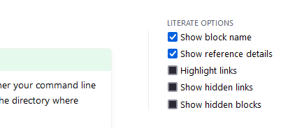
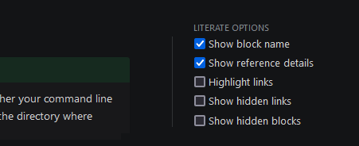
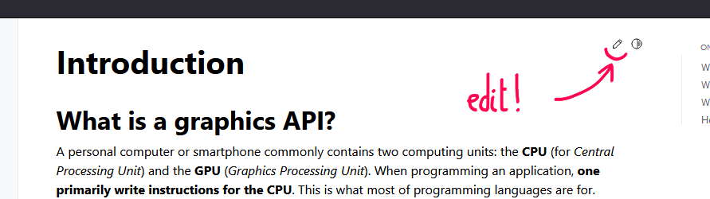
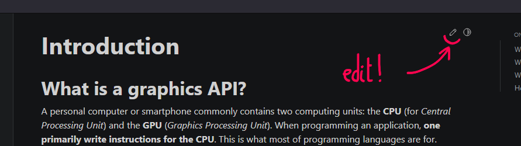

Introduction#
What is a graphics API?#
A personal computer or smartphone commonly contains two computing units: the CPU (for Central Processing Unit) and the GPU (Graphics Processing Unit). When programming an application, one primarily write instructions for the CPU. This is what most of programming languages are for.
The CPU and GPU are two different processors. We program the CPU so that it instructs the GPU what to do through the graphics API and the driver.#
If one wants the application to execute instructions on the GPU (e.g., to render 3D images), the CPU code must send instructions to the driver of the GPU. A graphics API is a programming interface used by the CPU code to dialog with the GPU.
There exists many such APIs, for instance you may have heard of OpenGL, DirectX, Vulkan or Metal.
Tip
In theory anyone can invent their own graphics API. Each GPU vendor has its own low-level protocol for their driver to dialog with the hardware, on top of which the more common APIs are implemented (often provided with the driver).
In this documentation, we learn a graphics API called WebGPU. This API has been designed to provided a unified access to GPUs whichever the GPU vendor and operating system the application runs with.

WebGPU is a Render Hardware Interface built on top of the various APIs provided by the driver/OS depending on your platform. This duplicated development effort is made once by the web browsers and made available to us through the webgpu.h header they provide.#
Why WebGPU?#
🤔 Yeah, why in the world would I use a web API to develop a desktop application?
Glad you asked, the short answer is:
Reasonable level of abstraction
Good performance
Cross-platform
Standard enough
Future-proof
And it is actually the only graphics API that benefits from all of these properties!
Yes, the WebGPU API has been designed primarily for the web, as an interface between JavaScript and GPUs. This is not a drawback, since as of today the requirements in terms of performance for web pages is actually the same as for native application. You can read more about why I believe that WebGPU is the best graphics API to learn in 2023.
Note
When designing an API for the Web, the two key constraints are portability and privacy. We benefit here from the effort developed for portability, and fortunately the limitations of the API due to privacy considerations can be disabled when using WebGPU as a native API.
Why C++ then?#
Shouldn’t we use JavaScript since it is the initial target of WebGPU? Or C because it is the language of the webgpu.h header we’ll be using? Or Rust since this is the language in which one of the WebGPU backend is written? All of these are valid languages to use WebGPU with, but I chose C++ because:
C++ is still the primary language used for high performance graphics application (video games, render engines, modeling tools, etc.).
The level of abstraction and control of C++ is well suited for interacting with graphics APIs in general.
Graphics programming is a very good occasion to really learn C++. I will only assume a very shallow knowledge of this language in the beginning.
See also
For an equivalent of this documentation for Rust, I recommend you to have a look at Sotrh’s Learn WGPU.
How to use this documentation?#
Reading#
The first two parts of this documentation have been designed to be read sequentially, as a full lecture, but its different pages can also be used as reminders on specific topics.
The Getting Started part deals with the boilerplate needed to initialize WebGPU and the window management (using GLFW), and introduces key concepts and idioms of the API. In this section, we manipulate the raw C API, and finish by introducing the C++ wrapper that we use in the rest of this documentation.
It is possible to go straight to part 2 on Basic 3D Rendering and use the boilerplate code resulting from part 1 as a starter kit. You can always come back later to the details of the getting started part later on.
Rendering is far from being the only use of GPUs nowadays; part 3 introduces Basic Compute, i.e., non-rendering use of WebGPU.
The fourth part Advanced Techniques is made of focus points on various computer graphics techniques, which can be read more independently on each others.
Literate Programming#
Warning
This guide is in an early phase; it is only available for the first few chapters.
This guide follows the principle of Literate Programming: the documentation you read is annotated such that one can automatically combine its code blocks into a fully working code. This is a way to ensure that the guide truly contains everything you need to reproduce the results.
On the right-hand sidebar of the chapters that support it, you can enable/disable the display of these information:
 Everything is turned off by default to avoid visual clutter, but if you feel you don’t know where exactly to include in particular code snippet, you can turn them on.
Contributing#
If you encounter any typo or more important issue, feel free of fixing it by clicking the edit button present on top of each page!
 More generally, you can discuss any technical or organizational choice through the repo’s issues. Any constructive and/or benevolent feedback is welcome!